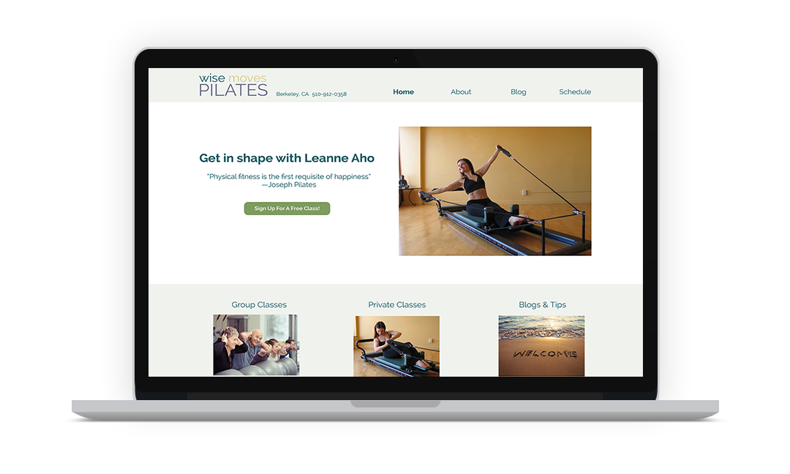

SUMMARY
Wise Moves Pilates is a small business owned by Private Pilates Instructor, Leanne Aho, located in Berkeley, CA. I worked with her to redesign her old site and craft an identity.

MY ROLE
I led the research, design and project management for the site while Leanne provided management help and content. The logo is being designed by another designer.
EXPLANATION & PROBLEM
Up until now, Leanne hasn’t needed new clients, as her business has been primarily built on referrals. She has come to a point where she needed her business to grow but was unsure how to take it to that point. Leanne had many ideas, from offering wellness retreats, selling pilates videos, create training programs for new instructors, providing an active blog that featured advice from other practitioners, and acquiring new clients for her group and private classes. Because she hasn’t yet established a solid business plan or started creating any content for the many ideas she had, I proposed we start with crafting an online identity first for this phase of the project, and expand the site once she had firmer plans and content in place. She agreed, noting that the site needs to convey images of strength and independence, as her practice offers a holistic approach to Pilates that focuses on self and healing.
RESEARCH
To identify what aspects of her business and ideas she should focus on most, I decided to deploy a quick survey on social media to gather input on what would entice new users to try pilates. (insert link to survey) View the survey here
Findings
Over 50% of respondents said they prefer to learn through a group class and would be motivated in joining one if offered a free session. Secondly, they expressed interest in following instructions from a blog, and taking private classes came in third. No one expressed interest in retreats or consultations. Based on this information, we decided to feature group classes, private classes, and a blog on her website to start with. The information gathered also helped us identify what topics Leanne should focus on in future blog posts. (insert image of research results)
Competitive Analysis
A few pilates companies and studios came up in the survey in which people mentioned they have tried or have been a member of in the past. To understand ways I could recommend Leanne in expanding her business in the future, I conducted a competitive analysis of the 3 most commonly named Pilates companies from the survey. They were Windsor Pilates, Wundabar, and 24 Hour Fitness.
Windsor is known for their easy to follow Pilates videos which cater primarily to older women. Wundabar focuses on their unique pilates machines, while 24 Hour Fitness is known for free fitness classes (which includes Pilates) offered with gym memberships. While this is a competitive landscape, I worked with Leanne to identify busy working professionals as the underserved portion of the market and we began to tailor the design to appeal to this audience.
User Persona
From the research gathered we were able to create a User Persona of Annie, a busy working professional with a strong interest in health and fitness, that the site would be designed for.
User Flows
Wireframes
Color Scheme
To exude a feel of calmness, friendliness, mixed with independence, strength, and an approach to healing, I used a color scheme consisting of nature colors. Earth tones of green, blue, beige, brown, and yellow convey healing, strength, calmness, and independence combined.
Typography
To appeal to a target audience of busy working professionals, a modern look in typography was important. One that was simple, easy to read, but yet offered a sense of style was key in choosing the right Typeface. Due to budget, a free web-safe font was necessary, and Raleway best fit the bill. It offers excellent readability for both headings and text, as well as a text-based logo as a current placeholder while Leanne awaits the final logo from another designer. (insert typography image of Raleway)
High Fidelity Wireframes
Mockup
CONCLUSION
This was a fun project to work on with a client. I realized the importance of research in helping Leanne establish a focus on this stage of her business. Creating a web presence as she works on establishing a more solid business plan with her numerous ideas is important.
During my time working with Leanne, she had undergone a change in location due to a previous studio shutting down. This created a gap in our working relationship, and are just now back on the project. As we work on finalizing the designs for this scope, I will also be developing her website using Wordpress so she may easily update her own blogs until she is ready to further expand on ideas with a more solid business plan. The site for this scope is set to launch at the end of June 2016.